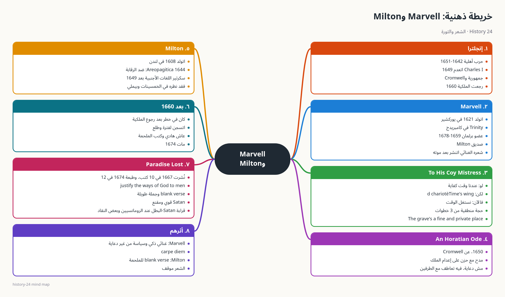

🌿
الدرس 24: Marvell وMilton: الشعر في وسط ثورة، وإزاي أعظم ملحمة إنجليزية اتكتبت بعد ما صاحبها فقد نظره
📄 حمّل PDF الدرس 🎧 حمّل تسجيل الدرس كامل (MP3 · 5 MB) 📝 ملخص الدرس (عربي) PDF 📝 Lesson Summary (English) PDF 🧠 الخريطة الذهنية PDF🧠 شوف الخريطة الذهنية للدرس
